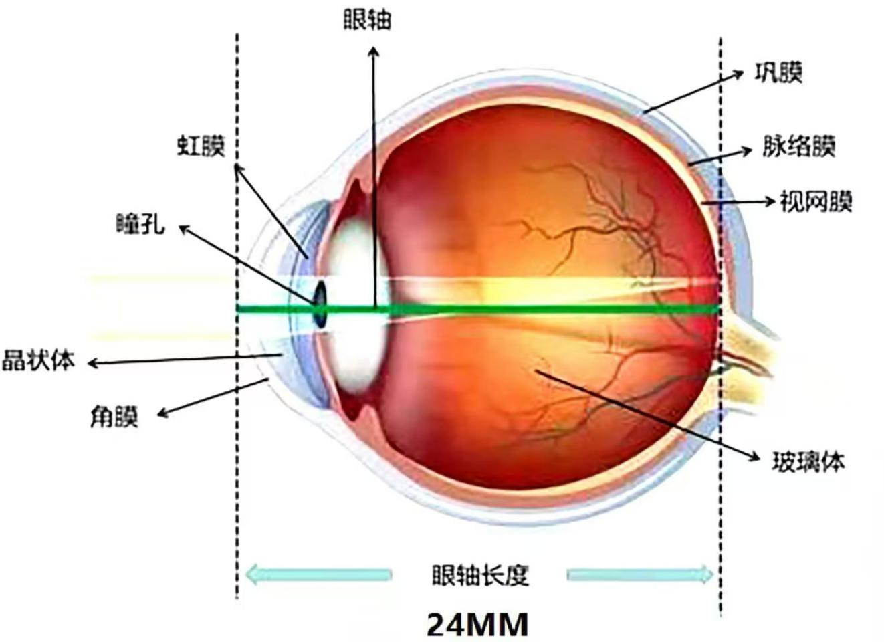
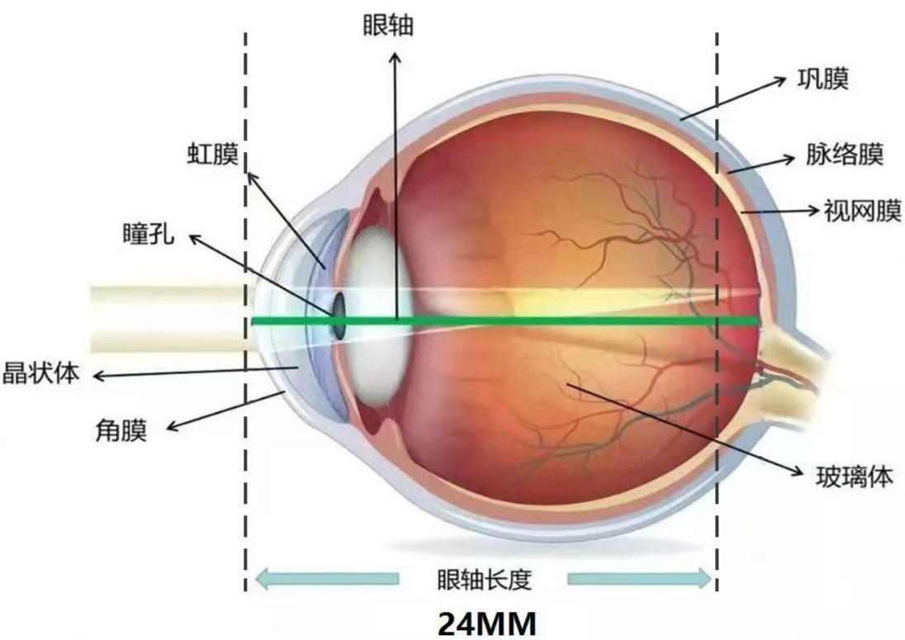
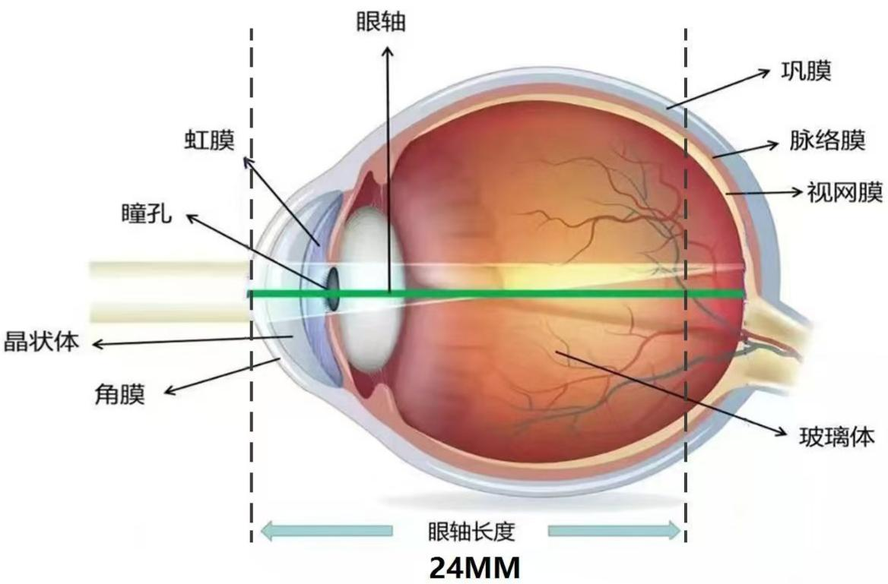
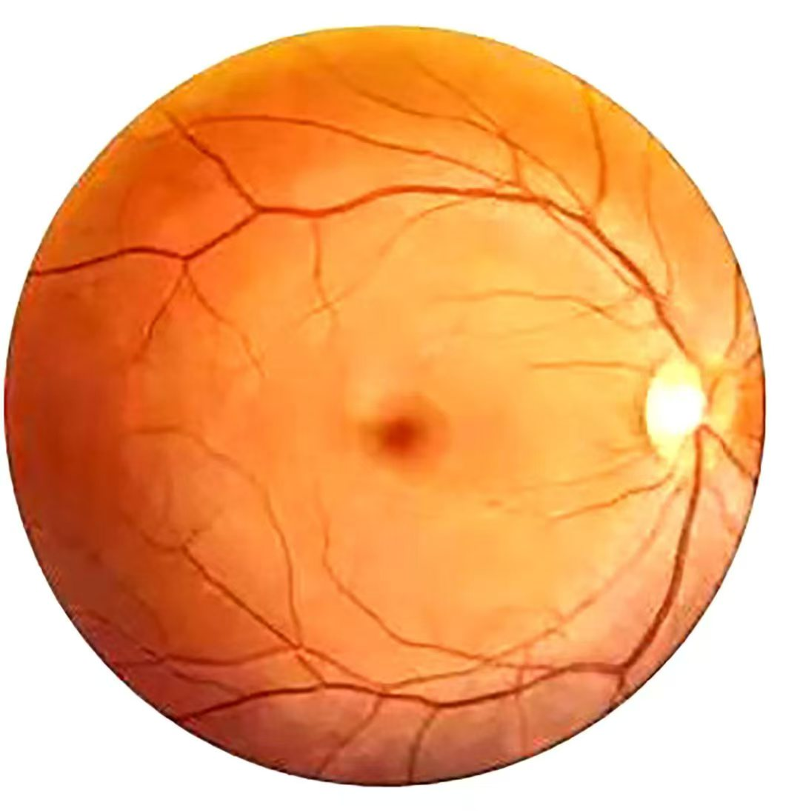
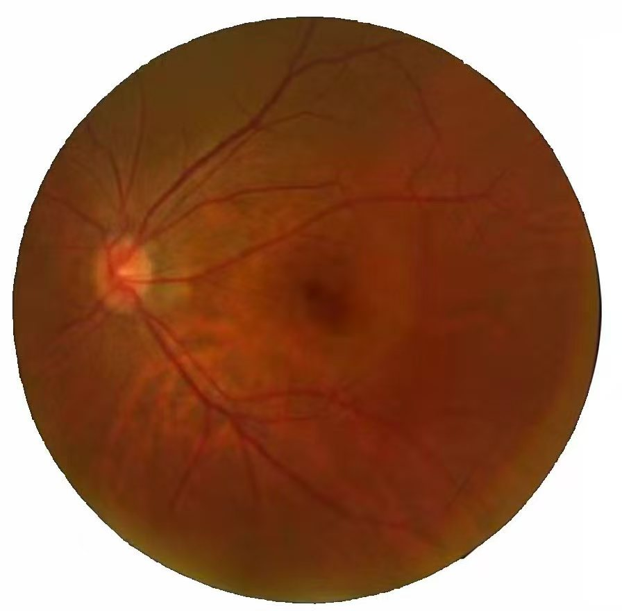
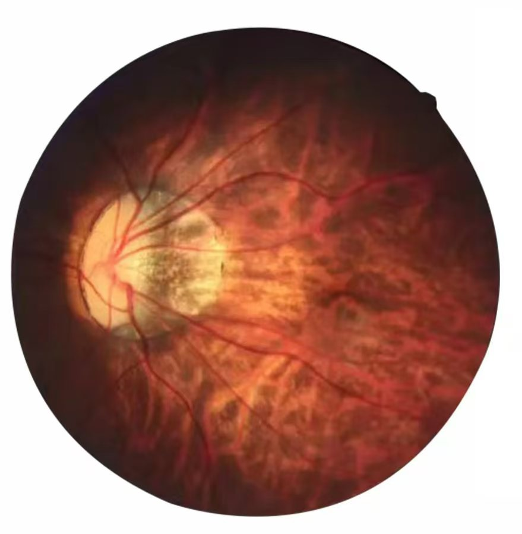
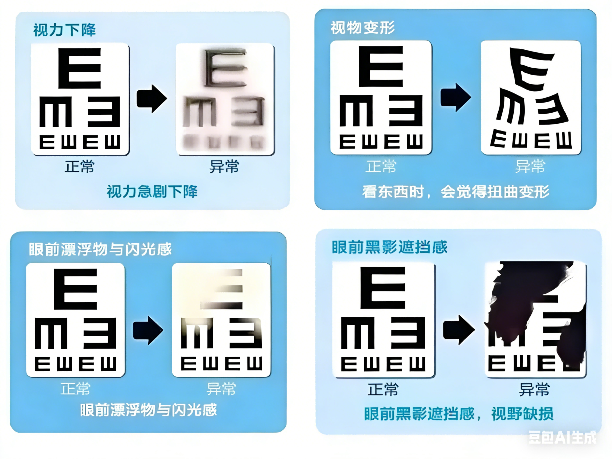
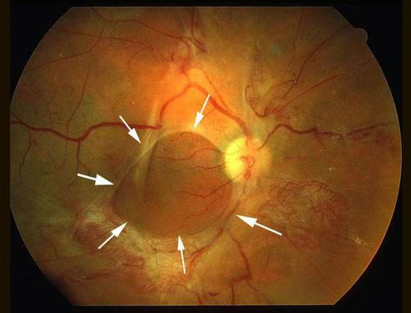
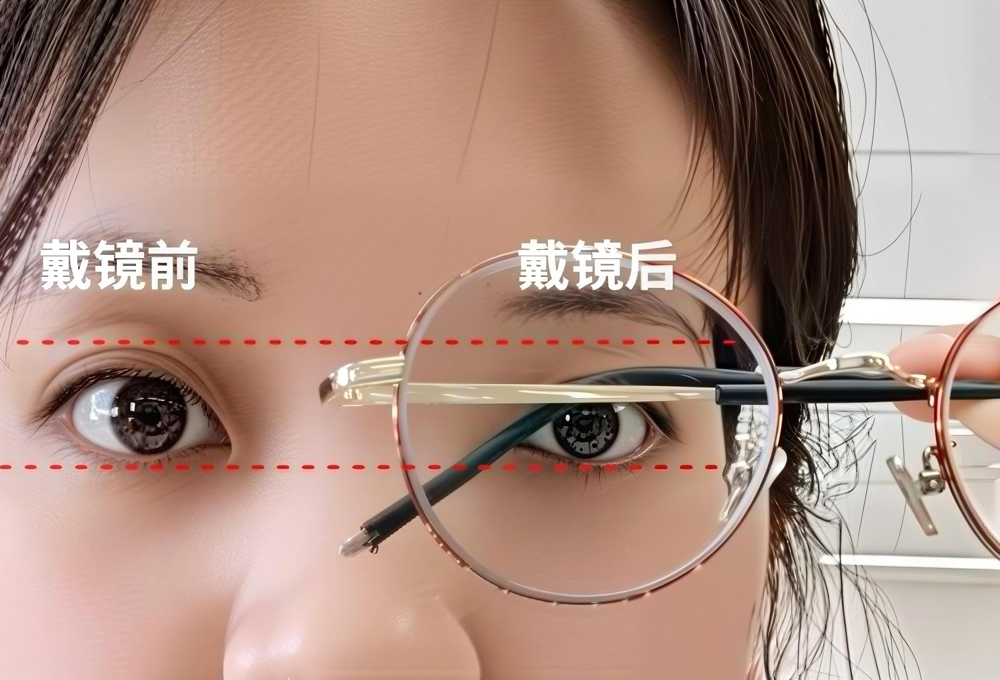
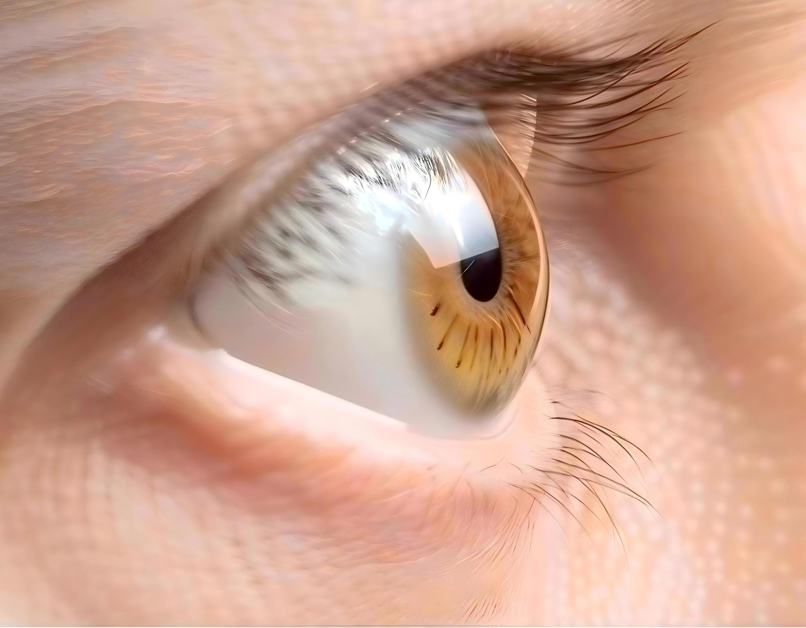

预测结果
| 年龄 | 不干预 | 25%防控 | 50%防控 | 75%防控 | 90%防控 |
|---|
📈 不同防控措施下的度数发展趋势
眼轴长度对比
正常眼轴

正常眼轴长度约为23.5-24mm
近视眼轴

近视眼轴延长至24-26mm
高度近视眼轴

高度近视眼轴超过26mm
高度近视的危害
300度以内

眼底结构基本正常，轻微豹纹状改变
300-900度

豹纹状眼底随光度增加逐渐明显，可能出现后巩膜葡萄肿
900度以上

萎缩性眼底，视网膜变薄，易发生病变
并发症风险预警
青光眼风险
正常眼压范围：10-21mmHg，超过24mmHg需警惕
青光眼风险计算器
请输入18岁预测度数： 度
视网膜脱落风险
高度近视是视网膜脱落的重要危险因素
600-900度：风险增加10倍以上
900度以上：风险增加30倍以上

其他并发症
视网膜下新生血管：发生率5%-40%
后巩膜葡萄肿：发生率高达77.1%
视网膜萎缩/出血/脱离：随度数增加风险递增
遗传风险：父母均近视子女患病率显著提高

外观影响
眼睛变小

长期高度近视导致眼部结构改变
眼球突出

眼轴延长导致眼球前后径增大
眼神无光
眼底病变影响视觉质量
近视对于学业和工作的影响
📚 学业影响
- 学习效率下降近视导致视疲劳，注意力难以集中，影响学习效率
- 专业选择受限军校、警校、飞行技术、航海技术等专业对视力有严格要求，高度近视可能无法报考
- 学习成绩受影响视功能异常可能影响阅读速度和理解能力，进而影响整体学习成绩
💼 职业影响
- 就业限制飞行员、警察、军人、运动员等职业对视力要求较高，近视可能成为入职障碍
- 工作表现长时间使用电脑或精密仪器工作的人员，近视可能加剧视疲劳，影响工作效率
- 职业发展某些精细操作岗位对视力要求极高，高度近视可能限制职业发展空间
🏠 生活影响
- 运动受限高度近视患者不宜参加剧烈运动，以免增加视网膜脱落风险
- 生活不便依赖眼镜或隐形眼镜，雨天、雾天等天气条件下视力受影响
- 经济负担眼镜、隐形眼镜及相关医疗费用构成长期经济负担